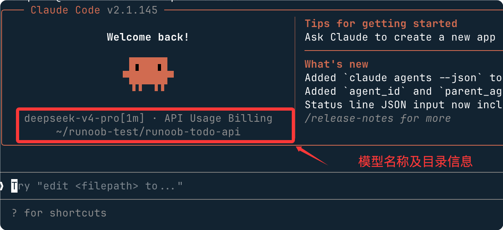
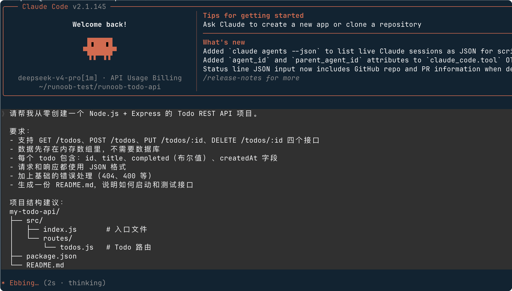
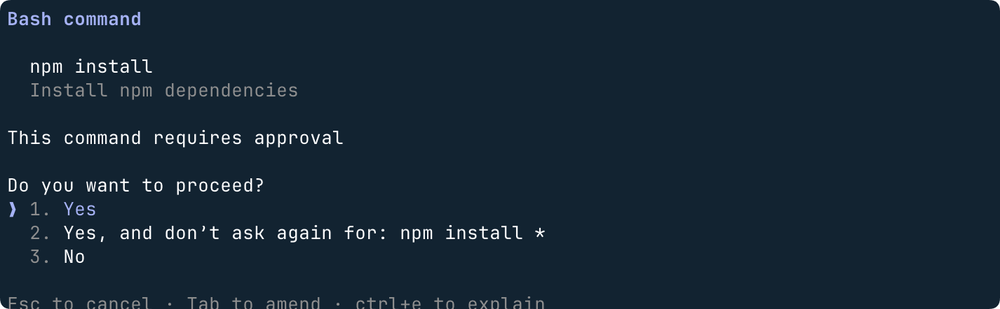
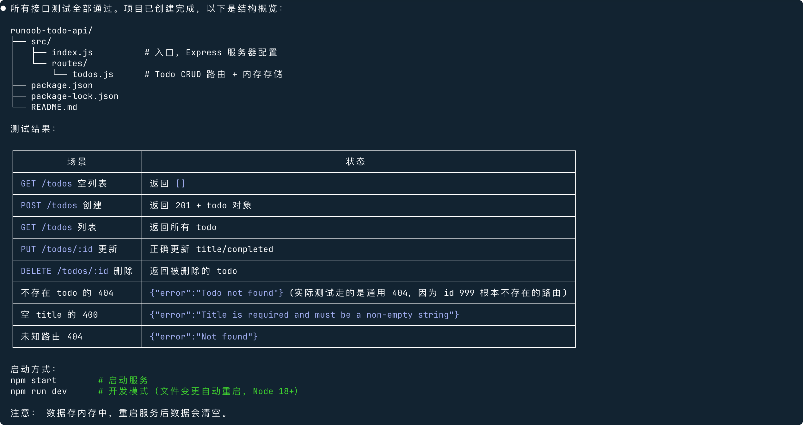
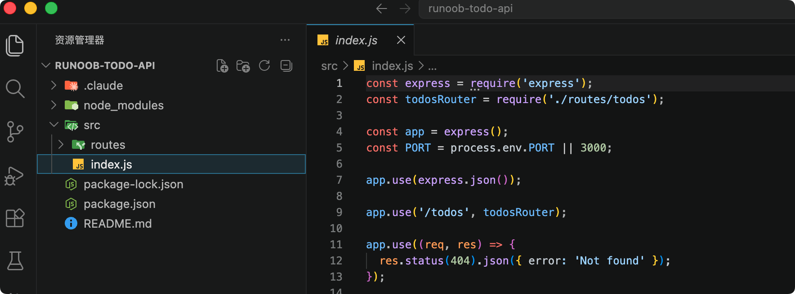
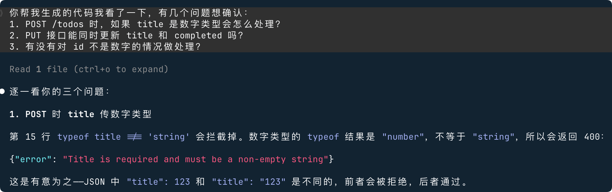

Claude Code en acción
Este capítulo te guía desde abrir la terminal hasta poner en marcha una API REST de Todo completa, impulsada en todo momento por Claude Code + DeepSeek V4.
Referencia de configuración de Claude Code + DeepSeek V4:Configuración de Claude Code con DeepSeek
Primero veamos la interfaz de operación básica de Claude Code y los comandos de uso frecuente.
Inicia tu primera sesión de Claude Code
Abre la terminal, entra en cualquier directorio de trabajo (o crea una carpeta vacía) y luego escribe:
$ mkdir runoob-todo-api $ cd runoob-todo-api $ claude
En el primer inicio verás la pantalla de bienvenida, la información de versión y la configuración de variables de entorno de DeepSeek.

Si no estás seguro de que la configuración esté activa, escribe inmediatamente después de entrar/status, confirma que la URL base apunta ahttps://api.deepseek.com/anthropic。
Tabla de referencia rápida de comandos de barra diagonal comunes
En el cuadro de diálogo de Claude Code, los que empiezan con/son comandos integrados y no se envían al modelo.
| Comando | Función |
|---|---|
| /status | Ver el modelo actual, la URL base y las estadísticas de la sesión |
| /help | Mostrar todos los comandos disponibles |
| /clear | Borrar el contexto de la conversación actual (no elimina archivos) |
| /exit o Ctrl+C | Salir de Claude Code |
| /undo | Deshacer la última modificación de archivos |
| /diff | Ver el git diff de la última modificación |
Mecanismo de avisos de permisos
Cuando Claude Code se dispone a escribir archivos o ejecutar comandos, primero se detiene, enumera las operaciones que va a realizar y espera tu confirmación.
Este es el mecanismo de seguridad más importante de Claude Code; los principiantes no deben preocuparse de que la IA se descontrole y haga cambios no deseados.
Verás un aviso similar a este:
┌─────────────────────────────────────────────────┐ │ Claude wants to create the following files: │ │ │ │ • src/index.js │ │ • src/routes/todos.js │ │ • package.json │ │ │ │ Allow? [Y/n] │ └─────────────────────────────────────────────────┘
Presiona directamenteEntero escribeypara confirmar; escribenpara omitir.
Proyecto práctico: construye una API de Todo desde cero con IA
Esta sección te guía para que uses lenguaje natural y controles Claude Code, generando desde cero una API REST de Node.js funcional.
Objetivo del proyecto
Vamos a construir una API REST con las siguientes funciones:
| Endpoint | Función |
|---|---|
| GET /todos | Obtener todas las tareas pendientes |
| POST /todos | Crear una nueva tarea pendiente |
| PUT /todos/:id | Actualizar una tarea pendiente (marcar como completada/modificar contenido) |
| DELETE /todos/:id | Eliminar una tarea pendiente |
Stack tecnológico:Node.js + Express, los datos se guardan temporalmente en memoria (no se necesita base de datos, lo que reduce la complejidad).
Paso 1: Describe los requisitos en lenguaje natural
Escribe el siguiente contenido en el cuadro de diálogo de Claude Code (puedes copiarlo y pegarlo directamente):
请帮我从零创建一个 Node.js + Express 的 Todo REST API 项目。 要求： - 支持 GET /todos、POST /todos、PUT /todos/:id、DELETE /todos/:id 四个接口 - 数据先存在内存数组里，不需要数据库 - 每个 todo 包含：id、title、completed（布尔值）、createdAt 字段 - 请求和响应都使用 JSON 格式 - 加上基础的错误处理（404、400 等） - 生成一份 README.md，说明如何启动和测试接口 项目结构建议： my-todo-api/ ├── src/ │ ├── index.js # 入口文件 │ └── routes/ │ └── todos.js # Todo 路由 ├── package.json └── README.md

Los tres elementos para escribir un buen prompt:Contexto(informar a la IA sobre el stack tecnológico y el contexto del proyecto),Restricciones(dejar claro lo que no quieres),Salida esperada(proporcionar requisitos específicos de estructura de archivos o formato).
Paso 2: Claude Code genera la estructura de archivos
Una vez confirmados los permisos, Claude Code creará los siguientes archivos uno tras otro.
Durante el proceso de generación hay muchas confirmaciones de permisos; normalmente basta con elegir Yes:

Si tiene éxito, se mostrará una salida como la siguiente, que incluye el contenido generado, la información de inicio, etc.; es muy detallada:
Observa la estructura del proyecto generado:

package.json
Ejemplo
"name": "my-todo-api",
"version": "1.0.0",
"description": "A simple Todo REST API built with Express",
"main": "src/index.js",
"scripts": {
"start": "node src/index.js",
"dev": "nodemon src/index.js"
},
"dependencies": {
"express": "^4.18.2"
},
"devDependencies": {
"nodemon": "^3.0.1"
}
}
src/index.js (archivo de entrada)
Ejemplo
// Archivo de entrada de la API de Todo; se encarga de la configuración e inicio de la aplicación Express
const express = require('express');
const todosRouter = require('./routes/todos');
const app = express();
// Número de puerto: usa preferentemente la variable de entorno PORT; valor predeterminado 3000
const PORT = process.env.PORT || 3000;
// Middleware: analiza el cuerpo JSON de la solicitud (obligatorio; de lo contrario, req.body es undefined)
app.use(express.json());
// Registra las rutas de Todo; todas las solicitudes a las rutas /todos las gestiona todosRouter
app.use('/todos', todosRouter);
// Ruta raíz: devuelve el mensaje de bienvenida y el número de versión
app.get('/', (req, res) => {
res.json({ message: 'Todo API is running!', version: '1.0.0' });
});
// Middleware global de manejo de errores (obligatorio; captura excepciones no controladas)
app.use((err, req, res, next) => {
console.error(err.stack);
res.status(500).json({ error: 'Internal Server Error' });
});
// Inicia el servicio HTTP
app.listen(PORT, () => {
console.log(`Server is running on http://localhost:${PORT}`);
});
src/routes/todos.js (archivo de ruta principal)
Ejemplo
// Módulo de rutas de Todo, con la lógica de negocio CRUD completa
const express = require('express');
const router = express.Router();
// Almacenamiento en memoria: se usa un array para simular la base de datos
// Los datos se pierden al reiniciar el servicio; más adelante se puede sustituir por una solución persistente como SQLite
let todos = [];
// Contador de ID autoincremental
let nextId = 1;
// GET /todos — Obtener todas las tareas pendientes
router.get('/', (req, res) => {
res.json(todos);
});
// POST /todos — Crear una nueva tarea pendiente
router.post('/', (req, res) => {
const { title } = req.body;
// Validación de parámetros: title es un campo obligatorio, el tipo debe ser string y no estar vacío
if (!title || typeof title !== 'string' || title.trim() === '') {
return res.status(400).json({ error: 'el campo title no puede estar vacío' });
}
// Construye un nuevo objeto todo
const newTodo = {
id: nextId++, // ID autoincremental
title: title.trim(), // Elimina los espacios al inicio y al final
completed: false, // El nuevo todo queda sin completar por defecto
createdAt: new Date().toISOString(), // Marca de tiempo con formato ISO 8601
};
todos.push(newTodo);
// 201 Created indica que el recurso se creó correctamente
res.status(201).json(newTodo);
});
// PUT /todos/:id — Actualizar una tarea pendiente
router.put('/:id', (req, res) => {
// Convierte el parámetro de ruta de string a número
const id = parseInt(req.params.id);
const todo = todos.find(t => t.id === id);
// 404: el recurso no existe
if (!todo) {
return res.status(404).json({ error:`Tarea pendiente con el id ${id}no encontrada`});
}
const { title, completed } = req.body;
// Solo actualiza los campos recibidos; los no recibidos conservan su valor original
if (title !== undefined) todo.title = title.trim();
// Boolean() garantiza que completed sea siempre de tipo booleano
if (completed !== undefined) todo.completed = Boolean(completed);
res.json(todo);
});
// DELETE /todos/:id — Eliminar una tarea pendiente
router.delete('/:id', (req, res) => {
const id = parseInt(req.params.id);
const index = todos.findIndex(t => t.id === id);
if (index === -1) {
return res.status(404).json({ error:`Tarea pendiente con el id ${id}no encontrada`});
}
// Elimina del array el elemento en la posición especificada
todos.splice(index, 1);
// 204 No Content indica que el borrado fue correcto; el cuerpo de la respuesta está vacío
res.status(204).send();
});
module.exports = router;
Paso 3: Revisa y confirma los cambios
Después de que Claude Code genere el código, no te apresures a ejecutarlo; adquiere el hábito de revisar.
Puedes seguir haciendo preguntas en la conversación:
你帮我生成的代码我看了一下，有几个问题想确认： 1. POST /todos 时，如果 title 是数字类型会怎么处理？ 2. PUT 接口能同时更新 title 和 completed 吗？ 3. 有没有对 id 不是数字的情况做处理？
Claude Code responderá una por una y puede corregir el código en el acto.
Este ciclo de «generar → cuestionar → corregir» es el ritmo esencial de la colaboración con la IA.

Paso 4: Instala las dependencias e inicia el servicio
Escribe en el cuadro de diálogo de Claude Code:
请帮我安装依赖并启动项目，然后告诉我怎么用 curl 测试每个接口
Claude Code realizará las siguientes operaciones (te pedirá confirmación en cada paso).
Instalar dependencias
$ npm install
Ejemplo de salida:
added 64 packages in 2.3s
Iniciar el servicio
$ npm start
Salida:
Server is running on http://localhost:3000
Comandos de prueba
Abre una nueva ventana de terminal y ejecuta los siguientes comandos curl en orden:
# 创建第一条 Todo
$ curl -X POST http://localhost:3000/todos \
-H "Content-Type: application/json" \
-d '{"title": "学习 Claude Code"}'
# 创建第二条 Todo
$ curl -X POST http://localhost:3000/todos \
-H "Content-Type: application/json" \
-d '{"title": "完成 DeepSeek 配置"}'
# 获取所有 Todos
$ curl http://localhost:3000/todos
# 把第一条标记为完成
$ curl -X PUT http://localhost:3000/todos/1 \
-H "Content-Type: application/json" \
-d '{"completed": true}'
# 删除第二条
$ curl -X DELETE http://localhost:3000/todos/2
# 再次查看列表，确认删除成功
$ curl http://localhost:3000/todos
Salida esperada (resultado final de GET /todos)
[
{
"id": 1,
"title": "学习 Claude Code",
"completed": true,
"createdAt": "2026-05-20T10:30:00.000Z"
}
]
¡Felicidades! Tu primera API desarrollada con asistencia de IA ya está en marcha.
Desafío avanzado: haz que Claude Code te ayude a añadir nuevas funciones
Una vez que la API esté funcionando, intenta usar lenguaje natural para que Claude Code amplíe sus funciones:
请给 Todo API 加上以下功能： 1. GET /todos 支持 ?completed=true/false 的查询参数过滤 2. GET /todos 支持 ?sort=createdAt&order=desc 的排序参数 3. 同时更新 README.md 里的接口文档
Observa cómo Claude Code entiende la estructura del código existente e inserta con precisión la nueva lógica en la posición correcta, en lugar de reescribir todo el archivo.
Esto es exactamente donde es superior a las herramientas comunes de generación de código.
CLAUDE.md: el archivo de memoria del proyecto
CLAUDE.md es el archivo de memoria a nivel de proyecto de Claude Code, que permite que la IA comprenda automáticamente las especificaciones del proyecto en cada inicio.
¿Por qué es necesario?
Claude Code se inicia "desde cero" cada vez: no recuerda lo que se dijo en la sesión anterior.
Pero si en el directorio raíz del proyecto hay unCLAUDE.mdarchivo, Claude Code lo leerá automáticamente en cada inicio, lo que equivale a darle a la IA un "manual del proyecto".
Puntos débiles sin CLAUDE.md:
- Tener que volver a explicar cada vez "usamos Express, no Koa"
- La IA olvida tus convenciones de nomenclatura y vuelve a generar archivos con nombres en camelCase
- Cada miembro del equipo le dice a la IA convenciones diferentes y el estilo del código se vuelve caótico
Plantilla para escribir CLAUDE.md
Crea en el directorio raíz del proyectoCLAUDE.md, con el contenido referido a la siguiente plantilla:
# 项目说明（CLAUDE.md）
## 项目概述
这是一个 Node.js + Express 的 Todo REST API 项目。
当前阶段：数据存在内存中，下一步会迁移到 SQLite。
## 技术栈
- 运行时：Node.js 18+
- 框架：Express 4.x
- 测试：（暂无，后续加 Jest）
- 代码风格：ESLint + Prettier（配置见 .eslintrc）
## 目录结构
src/
├── index.js # 入口，只做 app 配置和监听
└── routes/
└── todos.js # Todo 业务逻辑全在这里
## 命名规范
- 文件名：kebab-case（如 todo-service.js）
- 变量/函数：camelCase
- 常量：UPPER_SNAKE_CASE
- 路由文件按资源名命名（如 users.js、products.js）
## 重要约定
- 所有接口返回 JSON，错误统一格式：{ "error": "错误描述" }
- HTTP 状态码语义要准确：创建成功用 201，删除成功用 204
- 禁止在路由文件里直接操作数据库（现在是内存数组，将来是 DB）
- 每个路由文件只处理一种资源
## 禁止事项
- 不要用 var，只用 const/let
- 不要用回调风格，统一用 async/await
- 不要在代码里写中文注释（英文注释即可）
- 不要安装 lodash，原生 JS 方法够用
## 启动方式
npm start # 生产模式
npm run dev # 开发模式（nodemon 热重载）
## 测试接口
见 README.md 的 curl 示例
Haz que Claude Code genere CLAUDE.md automáticamente
¿No quieres escribirlo a mano? Pídele directamente a la IA que lo genere por ti:
请根据当前项目的代码结构和我们的对话记录， 帮我生成一份 CLAUDE.md 文件， 内容包括项目概述、技术栈、目录结构、命名规范和重要约定。
Claude Code analizará todos los archivos generados y organizará automáticamente un CLAUDE.md adecuado para este proyecto.
Ritmo de mantenimiento de CLAUDE.md
| Momento | Qué hacer |
|---|---|
| Introducir nuevas dependencias | Actualizar la sección «Pila tecnológica» |
| Modificar la estructura de archivos | Actualizar la sección «Estructura de directorios» |
| Establecer nuevas convenciones de codificación | Añadir a «Convenciones importantes» |
| Descubrir que la IA comete repetidamente el mismo error | Añadir a «Prohibiciones» |
Haz commit de CLAUDE.md a Git, y así todos los miembros del equipo y la IA compartirán la misma especificación.
Esta es la infraestructura para la colaboración de equipo asistida por IA.
Resumen del capítulo
| Qué aprendiste | Contenido correspondiente |
|---|---|
| Iniciar Claude Code y confirmar la configuración de DeepSeek | Iniciar una sesión y /status |
| Usar un prompt de tres elementos para describir los requisitos | Paso 1: descripción en lenguaje natural |
| Revisar el código generado por la IA | Paso 3: revisión y cuestionamiento |
| Instalar dependencias, iniciar y probar la interfaz con curl | Paso 4: ejecución y pruebas |
| Usar CLAUDE.md para gestionar la memoria del proyecto | Configuración de CLAUDE.md |
Haz clic para compartir notas
<p style="font-size:14px;">¡Las notas deben ser una extensión del contenido de este artículo!</p><br> <p style="font-size:12px;"><a href="../tougao.html" target="_blank">Envío de artículos, haz clic aquí</a></p> <p style="font-size:14px;"><a href="../w3cnote/runoob-user-test-intro.html" target="_blank">Cómo obtener el código de invitación de registro</a></p> <h3 class="text-muted"><i class="fa fa-info-circle" aria-hidden="true"></i> Antes de compartir notas, debes <a href=";.html" class="runoob-pop">iniciar sesión</a>.</h3> <p><a href="../w3cnote/runoob-user-test-intro.html" target="_blank">Cómo obtener el código de invitación de registro</a></p>